How to Report CRC OpenShift Status to Azure Dashboards 🚀
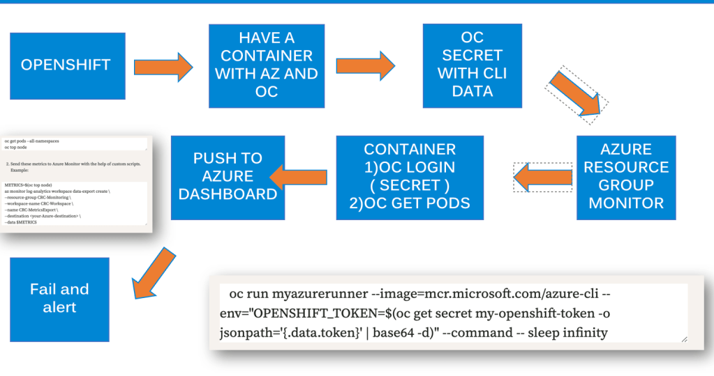
And Build an Alerting System to Push Infrastructure State to Azure
Managing the infrastructure state of your CRC (CodeReady Containers) OpenShift locally can get tricky if you don’t have a clear way of reporting it to a central monitoring system. That’s where Azure Dashboards come in! By integrating your CRC with Azure, you can create an alerting system that monitors your infrastructure’s health in real-time and notifies you of any changes. Let's dive in!
Step 1: Set Up CRC OpenShift on Your Local Machine 💻
Before we can push any data to Azure, ensure your CRC OpenShift is running smoothly on your local system.
🛠 Key steps:
-
Download CRC OpenShift from Red Hat CRC site.
-
Install and configure CRC OpenShift using the following commands:
crc setup
crc start
🎯 Goal: Get a fully running OpenShift environment locally.
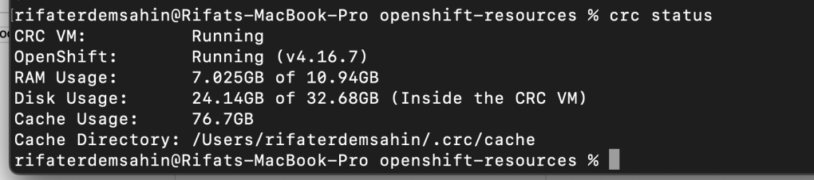
Step 2: Configure Azure Monitor and Dashboards ☁️
Azure Monitor is a powerful tool that lets you track, analyze, and visualize the health of your infrastructure. To start, you’ll need an Azure account and the Azure CLI.
🛠 Key steps:
- Log in to your Azure account:
az login
- Create a new Resource Group for your CRC monitoring:
az group create --name CRC-Monitoring --location
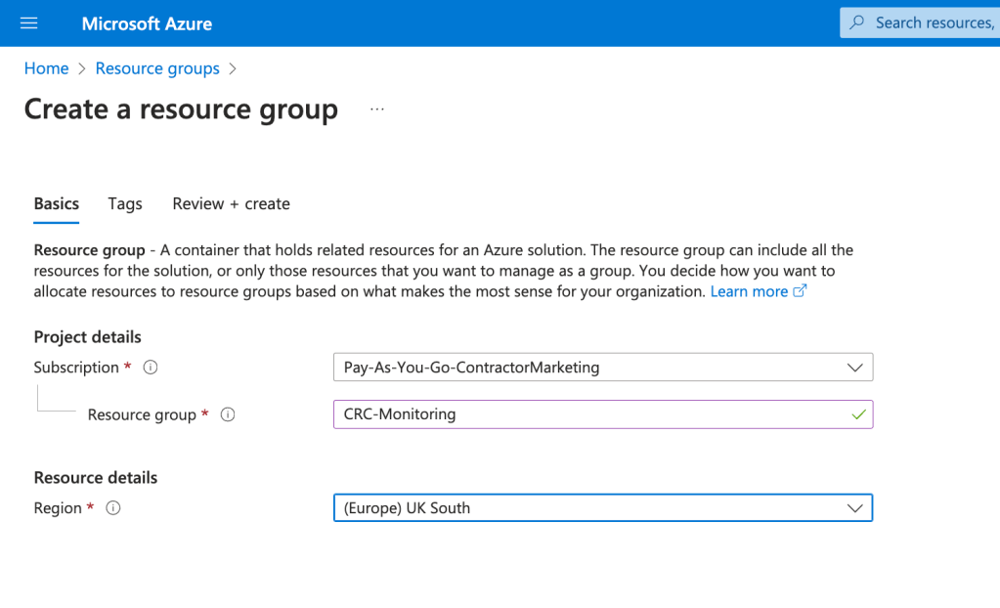
- Set up Azure Monitor:
az monitor log-analytics workspace create --resource-group CRC-Monitoring --workspace-name CRC-Workspace
🎯 Goal: Set up the basics of Azure monitoring where we will be sending CRC data.
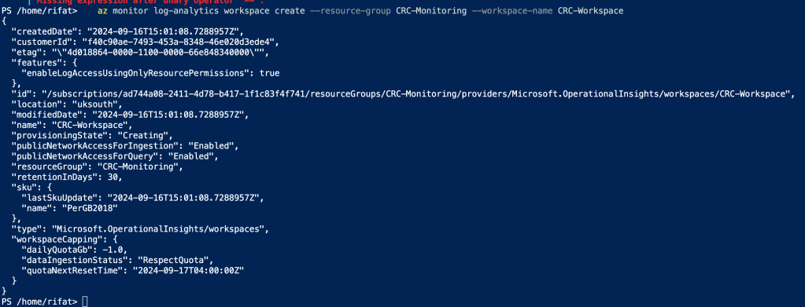
Running a Log Analytics workspace in Azure comes with a cost that depends on several factors such as:
-
Data Ingestion: Cost is incurred based on the amount of data ingested into the workspace. The pricing is typically calculated per GB of data ingested.
-
Data Retention: The price varies based on how long the data is retained. Default retention (up to 31 days) is included at no additional charge. For longer retention, an additional fee is charged.
-
Data Export: If you are exporting data from the workspace to other services, that will also have a cost.
For a general estimate, Azure Log Analytics pricing as of 2024 is structured like this:
-
Data Ingestion Cost: Approximately £2.3 - £4.5 per GB (after free tier, varies by region).
-
Data Retention: After the free 31-day retention period, £0.1 - £0.2 per GB per month for extended storage.
Example Calculation:
If your CRC monitoring generates 5 GB of logs daily, the monthly ingestion would be approximately 150 GB. The costs might look like this:
-
Ingestion: 150 GB * £2.3 = £345/month.
-
Extended Retention (if needed): For example, storing 50 GB for more than 31 days would cost an extra £10/month.
To avoid running these directly in Azure, consider storing logs in cheaper alternatives or self-hosted solutions to save costs, depending on your monitoring needs.
Would you like more detailed cost estimations based on specific metrics or services?
THERE IS A FREE TIER
If you are pushing less than 10 MB of data to an Azure Log Analytics workspace, the cost would likely fall under Azure's free tier, as it allows a small amount of data ingestion without charges.
Azure's free tier for Log Analytics generally includes:
-
Free data ingestion: Up to 5 GB per month of data ingestion for free (varies by region, but this is typical for many regions).
-
Free data retention: Data is retained for up to 31 days for free.
Since 10 MB is far below the 5 GB free tier, you should incur no cost for data ingestion or retention as long as you stay within this limit.
However, keep in mind that if you extend data retention beyond the default 31 days or add premium features, additional costs may apply. But based purely on pushing less than 10 MB, you will most likely remain within the free tier.
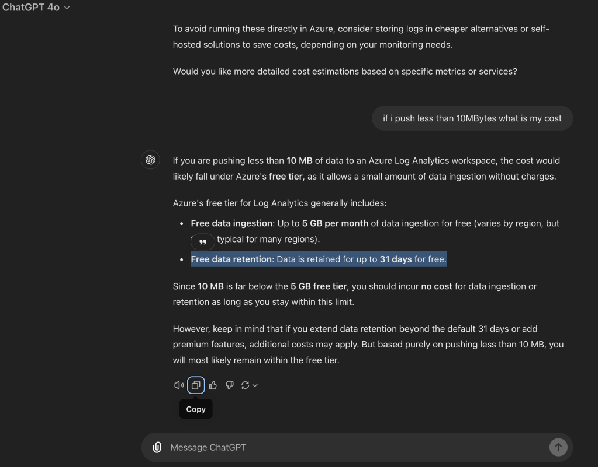
Step 3: Install Azure CLI in CRC OpenShift 🛠
Now that your Azure workspace is ready, we need to ensure you can send your CRC OpenShift status to Azure.
🛠 Key steps:
-
Access your CRC OpenShift terminal.
-
Install Azure CLI inside the OpenShift environment:
oc exec -it myazurerunner -- curl -sL https://aka.ms/InstallAzureCLIDeb | sudo bash
- Log in to Azure from the CRC environment:
az login
🎯 Goal: Ensure Azure CLI is accessible from within CRC OpenShift.
It seems like the pod myazurerunner you're trying to execute the command in doesn't exist, which is why you're getting the Error from server (NotFound): pods "myazurerunner" not found error.
Here are a few steps to troubleshoot and resolve the issue:
Step 1: Verify the Pod Name
Run the following command to list all the pods in your namespace. This will help you confirm if the pod name is correct or if there’s a typo:
oc get pods
Look through the list and identify the correct pod name. If the pod you want isn’t listed, you may need to create it or troubleshoot its deployment.
Step 2: Check Namespace
Make sure you’re operating in the correct namespace. Sometimes, the pod might exist in a different namespace than the one you're currently working in.
To switch to the correct namespace, use:
oc project
And then recheck the pod with:
oc get pods
Step 3: Deploy a Pod if None Exists
If no suitable pod exists, you can deploy a new one. For example, you can deploy a basic container to act as your "runner" pod for executing commands:
oc run myazurerunner --image=registry.access.redhat.com/ubi8/ubi -- sleep infinity
This will create a pod named myazurerunner using a minimal Red Hat UBI image, and it will stay active.
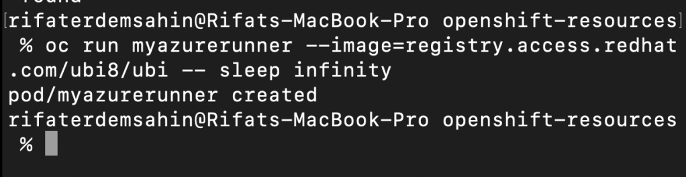
Step 4: Retry the Azure CLI Installation
Once the pod is available, execute the command again:
oc exec -it myazurerunner -- curl -sL https://aka.ms/InstallAzureCLIDeb | sudo bash
If your pod doesn't have sudo installed, you may need to elevate permissions or run the command without sudo (depending on the container's user permissions).
Let me know if the issue persists or if you need more guidance!
The error you're encountering suggests that the bash shell inside the pod may not be compatible with the script you're trying to run, or that the environment within the pod lacks some of the necessary tools (such as sudo or bash).
Here’s what you can try to resolve this:
Option 1: Install Azure CLI Without sudo
The container you’ve launched might not have sudo installed, and it’s likely running as a non-root user, which prevents commands requiring elevated privileges. Here’s how you can attempt the installation without using sudo.
- Execute the Azure CLI Installation Without
sudo:
Remove thesudopart from the command and try:
oc exec -it myazurerunner -- curl -sL https://aka.ms/InstallAzureCLIDeb | bash
This will attempt to install Azure CLI as the current user. If the pod's user permissions allow it, the installation will succeed.
Option 2: Use a Root User Pod
If the pod’s current user lacks the necessary permissions to install software, you can try using a pod that runs as root to avoid permission issues.
- Delete the existing pod:
oc delete pod myazurerunner
- Create a new pod with root privileges:
Create a pod that runs asroot, such as:
oc run myazurerunner --image=registry.access.redhat.com/ubi8/ubi -- bash -c "sleep infinity"
- Install the Azure CLI:
Now that you have a pod running with root privileges, retry the Azure CLI installation:
oc exec -it myazurerunner -- curl -sL https://aka.ms/InstallAzureCLIDeb | bash
Option 3: Install Manually Using a Different Image
Alternatively, you can use an image that already includes the Azure CLI tools, which saves the hassle of installing them manually.
- Delete the existing pod:
oc delete pod myazurerunner
- Deploy a pod with Azure CLI pre-installed:
Use the following command to run a container that already has Azure CLI installed:
oc run myazurerunner --image=mcr.microsoft.com/azure-cli -- bash
- Access the pod:
oc exec -it myazurerunner -- bash
- Confirm that Azure CLI is installed:
Once inside the pod, verify Azure CLI is installed by running:
az --version
These steps should help you resolve the command execution issue and get Azure CLI installed inside your OpenShift pod. Let me know if you need further assistance!
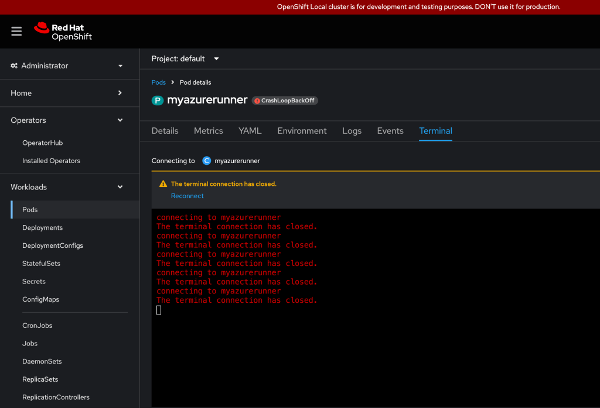
FIXED
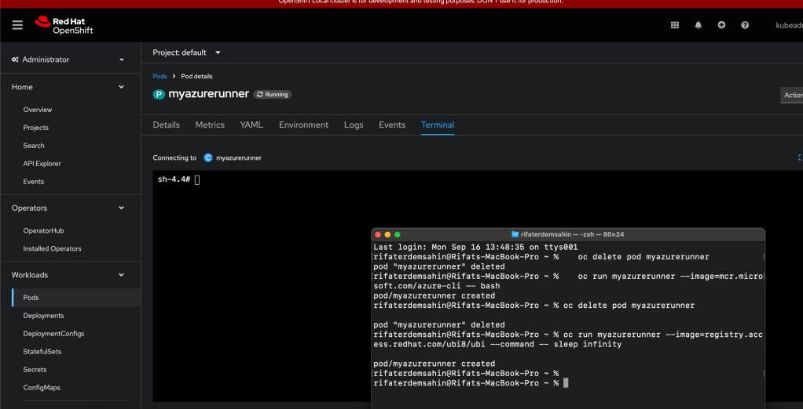
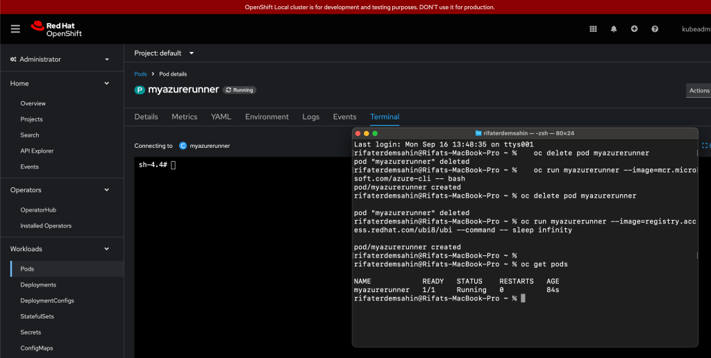
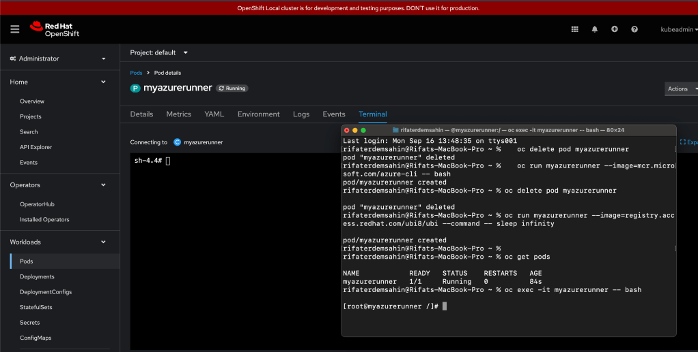
The error you're encountering (apt-get: command not found) is due to the fact that the Red Hat UBI (Universal Base Image) you’re using is based on yum (the package manager for Red Hat-based distributions) rather than apt-get, which is used in Debian-based distributions like Ubuntu.
Since you're working in a Red Hat-based environment, here's how you can install the Azure CLI using yum instead of apt-get.
Step 1: Install Required Dependencies
Run the following commands inside your pod to install the necessary tools using yum:
yum install -y curl
rpm --import https://packages.microsoft.com/keys/microsoft.asc
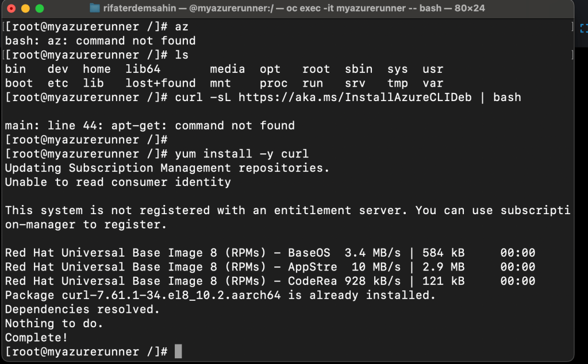
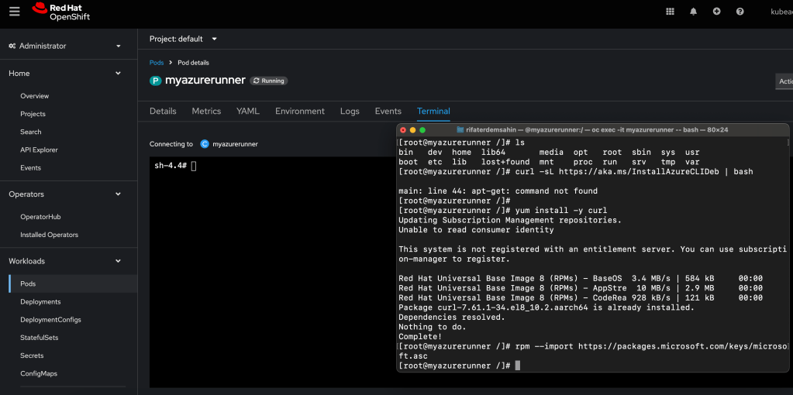
Step 2: Add Azure CLI Repository
Next, you’ll need to add the Microsoft package repository for Red Hat:
sh -c 'echo -e "[azure-cli]\nname=Azure CLI\nbaseurl=https://packages.microsoft.com/yumrepos/azure-cli\nenabled=1\ngpgcheck=1\ngpgkey=https://packages.microsoft.com/keys/microsoft.asc" > /etc/yum.repos.d/azure-cli.repo'
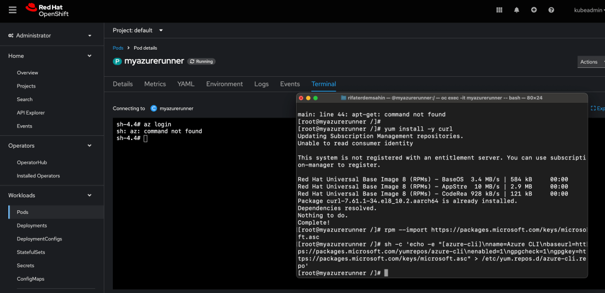
Step 3: Install Azure CLI
Now you can install the Azure CLI using yum:
yum install -y azure-cli
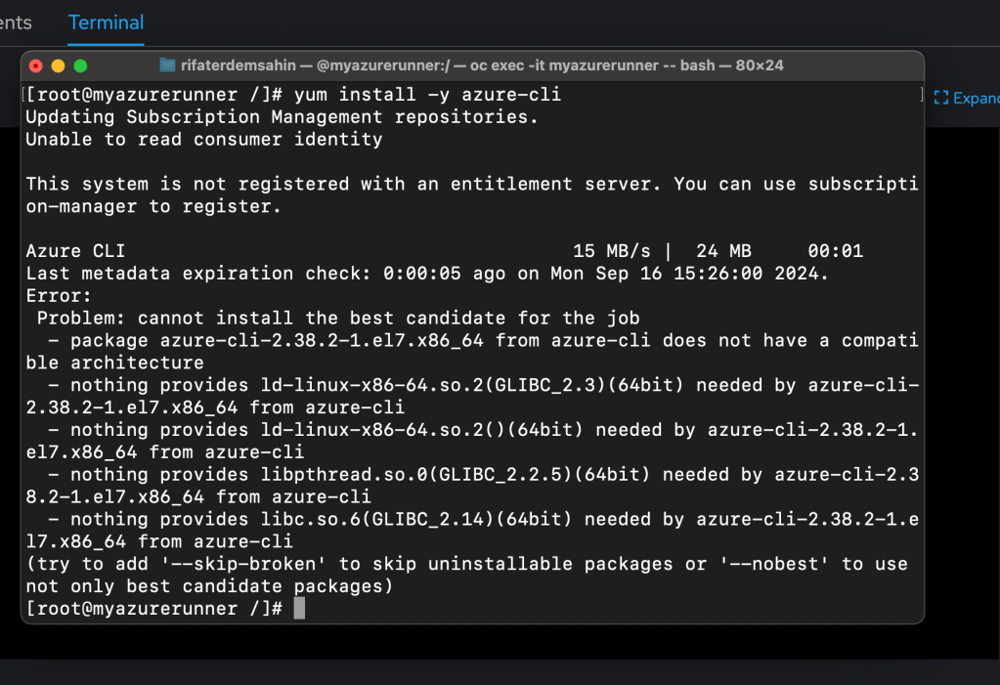
Step 4: Verify Azure CLI Installation
Once installed, verify that the Azure CLI is installed correctly by running:
az --version
This should install the Azure CLI in your Red Hat-based environment (the myazurerunner pod), and you can then proceed with configuring and using it as needed.
Let me know if you encounter any further issues!
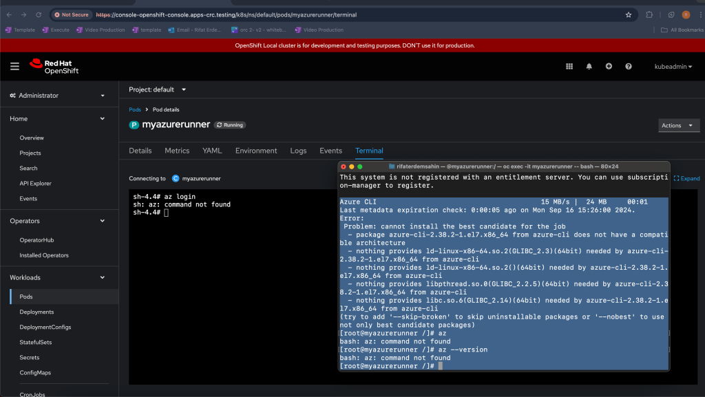
It sounds like the pod you tried to run using the official Azure CLI image is entering a crash loop on your local CRC OpenShift cluster. This could be caused by the way the image or command is being used within your environment. Let's try an alternative approach to prevent the crash loop.
Updated Approach
Step 1: Delete the current pod if it's still running in a crash loop
oc delete pod myazurerunner
Step 2: Create a new pod using the Azure CLI image, but ensure it runs with a long-lived command to avoid instant termination
Instead of using the bash command, which might exit immediately and cause the pod to crash, you can instruct the pod to sleep indefinitely to keep it running. Here's how:
oc run myazurerunner --image=mcr.microsoft.com/azure-cli --command -- sleep infinity
This ensures the pod stays running so that you can exec into it.
Step 3: Verify the pod is running
Check the status of the pod to ensure it's in a "Running" state:
oc get pods
You should see the myazurerunner pod listed as "Running."
Step 4: Access the pod's shell
Once the pod is up and running, you can access its shell:
oc exec -it myazurerunner -- bash
Step 5: Verify Azure CLI is installed
Now that you're inside the pod, you can confirm that the Azure CLI is installed by running:
az --version
If the Azure CLI is installed, you should see version information printed to the terminal.
Debugging Crash Loops
If the pod still enters a crash loop, it could be useful to check the logs for more information:
oc logs myazurerunner
This will provide insight into what’s causing the pod to crash, which will help in further troubleshooting.
Let me know if this resolves the issue or if you'd like additional troubleshooting steps!
Authenticate it
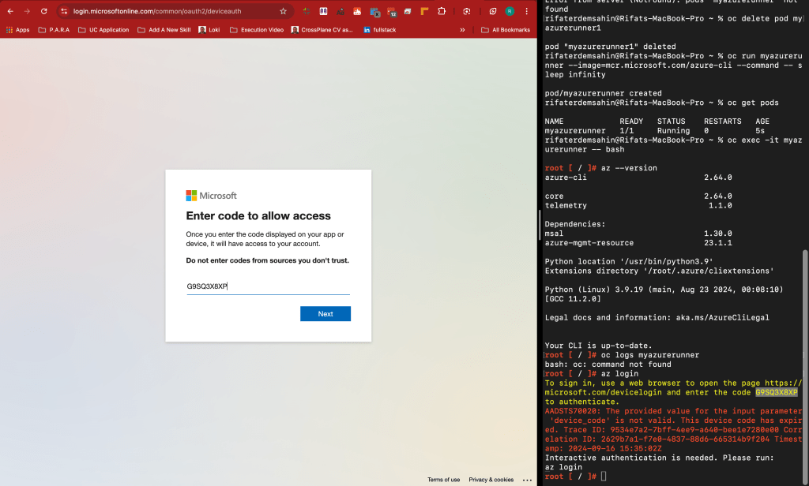
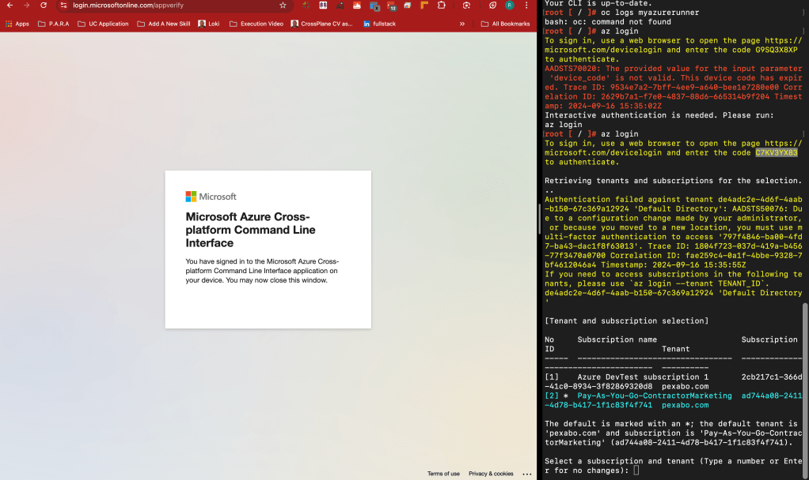
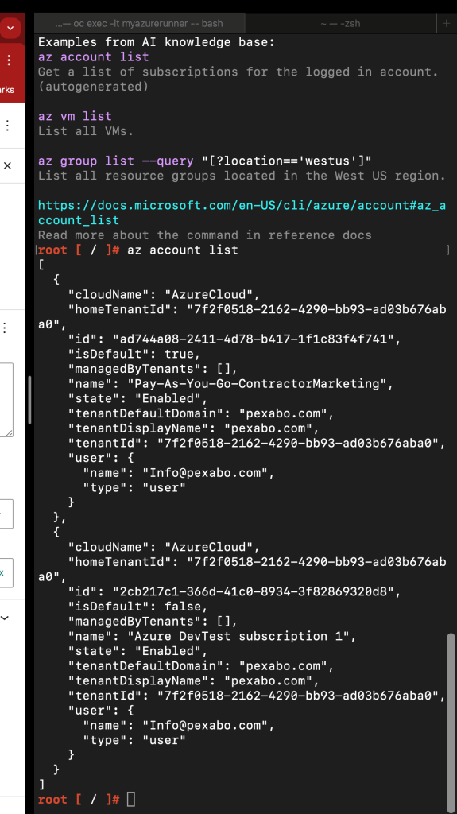
PROBLEM >> HOW DOES THE CONTAINER INSIDE THE CRC CONNECT TO THE OPENSHIFT IT IS RUNNING ON >>> THE CONTAINERS NEED THE AZ AND OC
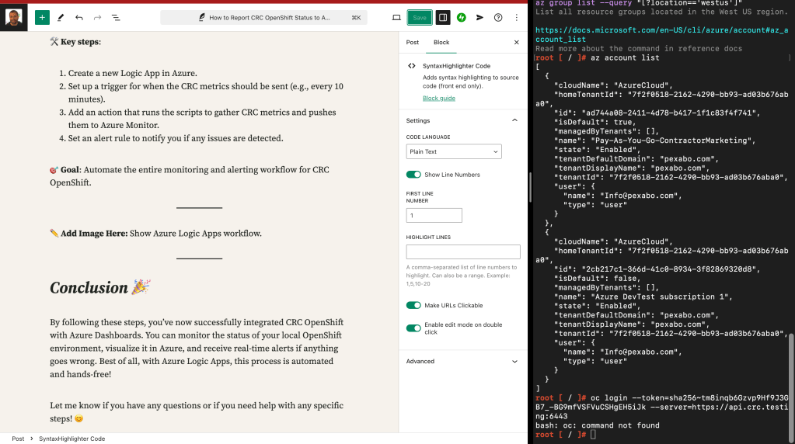
To connect a container running inside your CRC (CodeReady Containers) instance to the OpenShift cluster it is hosted on, you need to ensure that the container can access the OpenShift API. Here's a step-by-step guide on how this can be achieved:
Steps to Connect a Container in CRC to the OpenShift Cluster
Step 1: Set Up OpenShift Credentials in the Pod
You’ll need to provide the container with access to OpenShift’s API by supplying authentication credentials (like a token or kubeconfig file). The most common approach is to mount the OpenShift API token and use it inside the container.
Step 2: Access OpenShift API from Inside the Container
- Get the OpenShift API URL:
Inside CRC, the OpenShift API is typically accessible via the internal service URL. You can find this using:
oc whoami --show-server
This will return the API server's address, something like https://api.crc.testing:6443.
- Get the OpenShift Token:
The easiest way to authenticate from within the container is using an API token. To obtain it:
oc whoami -t
This will return your authentication token. You'll use this to authenticate the container to the OpenShift API.
Step 3: Inject the OpenShift API Token into the Pod
You can pass this token as an environment variable or mount it as a secret.
- Create a secret with the token: First, create a secret that contains the OpenShift API token:
oc create secret generic my-openshift-token --from-literal=token=$(oc whoami -t)
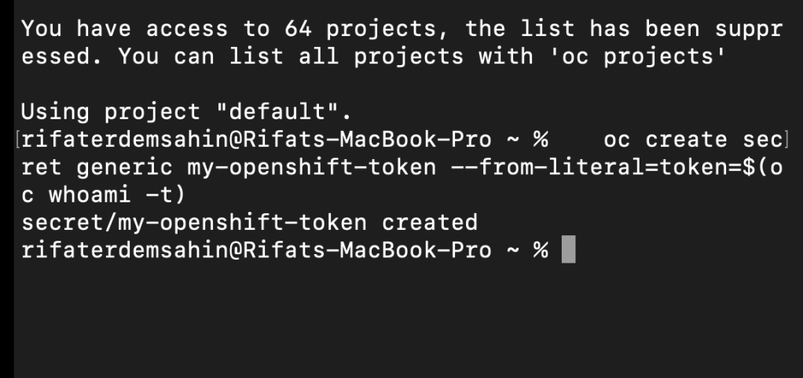
- Mount the secret into your container: When creating your pod, mount this secret into the container as an environment variable or a file:
oc run myazurerunner --image=mcr.microsoft.com/azure-cli --env="OPENSHIFT_TOKEN=$(oc get secret my-openshift-token -o jsonpath='{.data.token}' | base64 -d)" --command -- sleep infinity
Alternatively, you can mount the secret as a file and access it from within the container.
Step 4: Use the Token to Access the OpenShift API
Once the token is available inside the container, you can make API calls to OpenShift. For example, you could use curl to interact with the OpenShift API.
- Access the OpenShift API from within the container: If you are inside the container, use the token and API URL like this:
curl -k -H "Authorization: Bearer $OPENSHIFT_TOKEN" https://api.crc.testing:6443/apis
This should return the list of APIs available in your OpenShift cluster.
Step 5: Install and Use oc CLI Inside the Container (Optional)
If you want to use oc commands directly inside the container, you’ll need to install the OpenShift CLI within the container or pod.
- Install the
ocCLI: You can install theocCLI inside the container:
curl -LO https://mirror.openshift.com/pub/openshift-v4/clients/ocp/latest/openshift-client-linux.tar.gz
tar -xvzf openshift-client-linux.tar.gz
mv oc /usr/local/bin
- Log in to OpenShift inside the container: Once
ocis installed, you can log in using the token:
oc login https://api.crc.testing:6443 --token=$OPENSHIFT_TOKEN
Now, the container will be connected to the OpenShift API and you can interact with the OpenShift resources as needed.
Summary
-
Use the OpenShift API token (
oc whoami -t) to authenticate from inside the container. -
Create a secret with the token and inject it into the container.
-
Use
curlorocinside the container to interact with the OpenShift cluster.
By following these steps, your container inside CRC should be able to connect and interact with the OpenShift cluster it is running on.
Step 4: Push CRC Metrics to Azure Dashboards 📊
Now that Azure and CRC are connected, we need to push metrics from CRC OpenShift to Azure Monitor so they can be visualized on Azure Dashboards.
🛠 Key steps: KEY BRAKER!
- Use
oc getcommands to gather important metrics from CRC, like pod status, CPU usage, and memory utilization:
oc get pods --all-namespaces
oc top node
- Send these metrics to Azure Monitor with the help of custom scripts. Example:
METRICS=$(oc top node)
az monitor log-analytics workspace data-export create \
--resource-group CRC-Monitoring \
--workspace-name CRC-Workspace \
--name CRC-MetricsExport \
--destination
--data $METRICS
- In Azure Monitor, create a new dashboard and visualize these metrics.
🎯 Goal: Metrics from CRC OpenShift are now visible in Azure Dashboards.
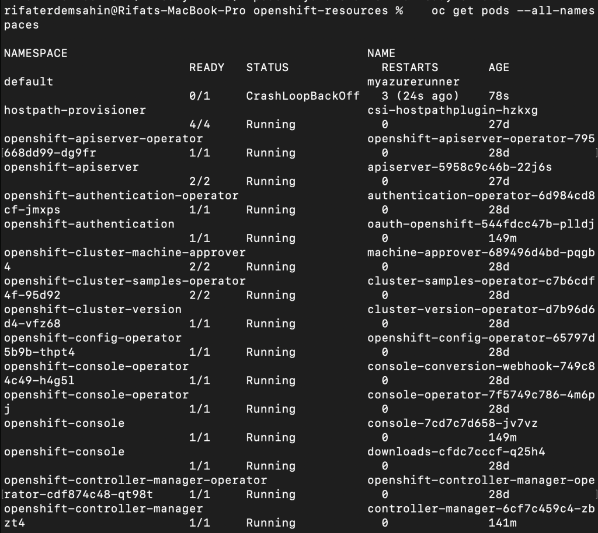
Step 5: Build an Alerting System for CRC 📣
Once you have the metrics flowing to Azure, it’s time to set up alerting! This will notify you whenever there are critical changes or failures in your CRC OpenShift.
🛠 Key steps:
-
In Azure Monitor, go to the “Alerts” section and create a new rule.
-
Select the resource group or workspace tied to your CRC metrics.
-
Set conditions for the alert—for example, if CPU usage exceeds 80% or pods crash.
-
Configure the action group to receive alerts via email, SMS, or webhook.
🎯 Goal: You now have a robust alerting system that will notify you of any CRC infrastructure issues.
✏️ Add Image Here: Display the alert creation page on Azure Monitor.
Step 6: Automate the Reporting Process with Azure Logic Apps 🔄
To make this entire process hands-free, use Azure Logic Apps to automatically report the status of your CRC OpenShift at regular intervals.
🛠 Key steps:
-
Create a new Logic App in Azure.
-
Set up a trigger for when the CRC metrics should be sent (e.g., every 10 minutes).
-
Add an action that runs the scripts to gather CRC metrics and pushes them to Azure Monitor.
-
Set an alert rule to notify you if any issues are detected.
🎯 Goal: Automate the entire monitoring and alerting workflow for CRC OpenShift.
✏️ Add Image Here: Show Azure Logic Apps workflow.
Conclusion 🎉
By following these steps, you’ve now successfully integrated CRC OpenShift with Azure Dashboards. You can monitor the status of your local OpenShift environment, visualize it in Azure, and receive real-time alerts if anything goes wrong. Best of all, with Azure Logic Apps, this process is automated and hands-free!
Let me know if you have any questions or if you need help with any specific steps! 😊
🔗 Connect with me:
-
💼 LinkedIn: https://www.linkedin.com/in/rifaterdemsahin/
-
🐦 Twitter: https://x.com/rifaterdemsahin
-
🎥 YouTube: https://www.youtube.com/@RifatErdemSahin
-
💻 GitHub: https://github.com/rifaterdemsahin
Imported from rifaterdemsahin.com · 2024